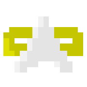

STMush Ship
Calculator
«
Character
Eng, Tac, Helm, Opr, Sci, and Dam are your console skills
Wis is your wisdom score as displayed in sheet, with gear
Turning model*
Reactive (turn to fire arc when it has recycled)
Anticipatory (turn to next ready arc before it recycles)
⚙ Tuning
▲ indicates a marked spec is better than average across all selected ships, ▼ indicates worse. For two ships, this is equivalent to indicating which has the better/worse spec.
* Turning takes time, depending on the MoveRatio of the ship. It takes twice as long to turn to an opposite face (e.g. F to A) than it does to turn to an adjacent face (e.g. F to S). Each face has 4 adjacent faces and 1 opposite face. Both models assume a stationary target.
Reactive simulates only turning toward an arc once it has become ready to fire, which reduces DPS. This is more representative of combat when you are turning to evade and/or to distribute incoming damage across shield facings, and do not have arc timing assistance from a tool.Anticipatory simulates turning at exactly the right time before the next ready arc recycles, so that it can be fired the instant the turn is complete. This better captures combat where all you care about is doing damage, or if you are using some kind of timer aid to know exactly when your arcs are going to recycle.
The initial volleys following the first arc at the start of the fight will incur turn delays regardless of model, since all arcs are presumed to start ready.
Turning while at warp maybe be completely different and I have not yet measured it.
Credit goes to PoF mar'Qon for making the ship spreadsheet, which provided most of the equations used by this calculator